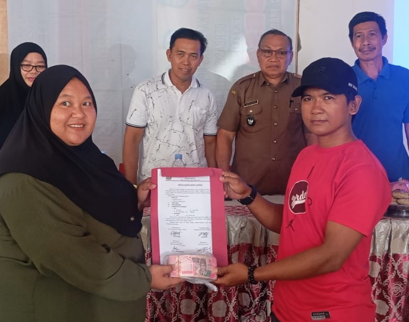

Potensi Unggulan & BUM Desa
Mendorong pertumbuhan ekonomi lokal melalui sektor pertanian, peternakan, dan UMKM Desa Tanete.

Pertanian
Lumbung Padi Produktif
Wilayah persawahan subur yang menghasilkan gabah berkualitas prima sepanjang tahun untuk ketahanan pangan nasional.
Peternakan
Sentra Ayam Petelur
Sektor peternakan ayam petelur menjadi penggerak roda ekonomi utama warga desa serta unit usaha BUMDes.

Pemberdayaan UMKM
Usaha Makanan Olahan
Dukungan promosi dan pemasaran bagi kelompok usaha perempuan dan pemuda dalam memasarkan produk lokal.